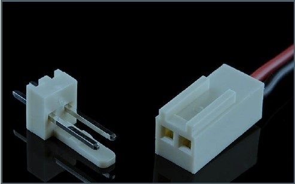
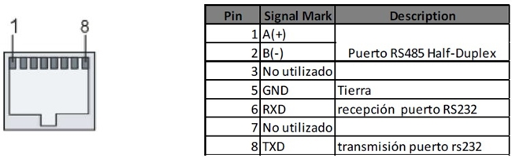
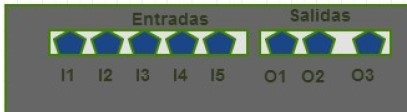
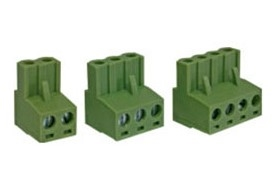
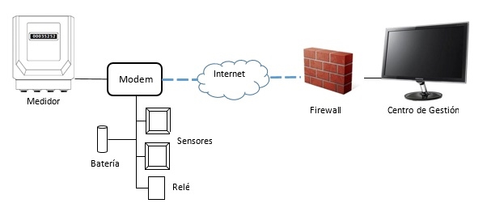
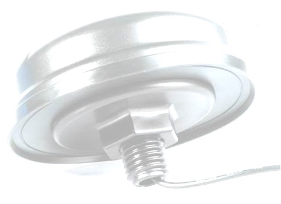
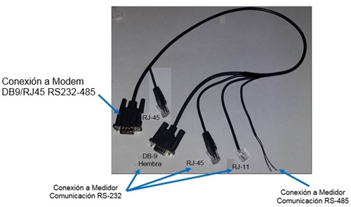
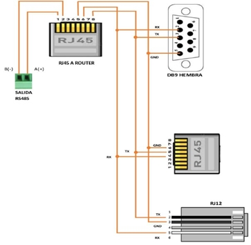

Siempre es más fácil conocer las normas ENEL-CODENSA
Rolex Rolex gold watch, compared with ordinary materials, gold watches are often expensive, but the replica rolex gold watch has the role of swiss replica watches hedging, so that it often becomes the first choice for collectors. The gold watch has value in the world, largely because the omega replica watch brand launched a commemorative limited edition watch or a replica hublot complex movement process or artistic attainments deep watches, mostly preferred gold precious metals such material. These watches tend to have a strong hedging function, therefore, Rolex Rolex gold watch reputation.

ET936 Router GPRS/3G/4G
Datos adicionales
Número de especificación
ET936
Fecha de vigencia
05/06/2019
Herramientas adicionales
- Contenido Ocultar
- 1. OBJETO
- 2. NORMAS DE FABRICACIÓN
- 3. REQUERIMIENTOS GENERALES
- 3.1. CARACTERÍSTICAS CONSTRUCTIVAS
- 3.2. COMUNICACIÓN
- 3.3. CONFIGURACIÓN
- 3.4. FUNCIONALIDADES
- 3.5. SUPERVISIÓN
- 4. REQUERIMIENTOS PARTICULARES
- 4.1 CARACTERÍSTICAS CONSTRUCTIVAS
- 5. ACCESORIOS
- 5.1. ANTENA CELULAR
- 5.2. ANTENA GPS
- 5.3. BATERIA
- 5.4. CABLE DE COMUNICACIONES
- 6. GARANTIA Y REPUESTOS
- 7. EMBALAJE PARA EL TRANSPORTE Y MARCACIÓN
- 8. PRUEBAS
- 8.1. PRUEBAS DE HOMOLOGACIÓN Y/O TIPO
- 8.2. PRUEBAS DE RUTINA
- 8.3. PRUEBAS DE RECEPCIÓN
- 9. GLOSARIO
- 10. ANEXOS
1. OBJETO
El presente documento indica las características técnicas y funcionales mínimas, generales y particulares para el router a ser utilizado en el control de pérdidas de energía, en la telemedida de medidores de energía instalados en las redes de la Compañía.2. NORMAS DE FABRICACIÓN
| NORMA | DESCRIPCIÓN |
| IEC 60255-27 | Measuring relays and protection equipment - Part 27: Product safety requirements |
| IEC 60529 | Degrees of protection provided by enclosures (IP Code) |
| IEC 60870-5-101 | Telecontrol equipment and systems - Part 5-101: Transmissionprotocols - Companion standard for basic telecontrol tasks |
| IEC 60870-5-102 | Telecontrol equipment and systems - Part 5: Transmission protocols - Section 102: Companion standard for the transmission of integrated totals in electric power systems |
| IEC 61000-4-2 | Electromagnetic compatibility (EMC) - Part 4-2: Testing and measurement techniques - Electrostatic discharge immunity test |
| IEC 61000-4-3 | Electromagnetic compatibility (EMC) - Part 4-3: Testing and measurement techniques - Radiated, radio-frequency, electromagnetic field immunity test |
| IEC 61000-4-4 | Electromagnetic compatibility (EMC) – Part 4-4: Testing and measurement techniques – Electrical fast transient/burst immunity test |
| IEC 61000-4-6 | Electromagnetic compatibility (EMC) - Part 4-6: Testing and measurement techniques - Immunity to conducted disturbances, induced by radio-frequency fields |
| IEC 61000-4-11 | Electromagnetic compatibility (EMC) - Part 4-11: Testing and measurement techniques - Voltage dips, short interruptions and voltage variations immunity tests |
| IEC 61000-4-12 | Electromagnetic Compatibility (EMC) - Part 4-12: Testing and measurement techniques - Ring wave immunity test |
| IEC 61000-6-2 | Electromagnetic compatibility (EMC) - Part 6-2: Generic standards - Immunity standard for industrial environments |
| NTC–ISO 2859-1 | Procedimientos de muestreo para inspección por atributos. Parte 1: Planes de muestreo determinados por el nivel aceptable de calidad -NAC- para inspección lote a lote. |
3. REQUERIMIENTOS GENERALES
3.1. CARACTERÍSTICAS CONSTRUCTIVAS
3.1.1. Envolvente
La envolvente del router podrá ser en aluminio o en material aislante. El grado de protección de la envolvente será mínimo IP30. El material deberá ser no propagador de incendios.
3.1.2. Módulo de radio
El componente denominado “Módulo de radio” debe cumplir con:
- Contar con certificación de producto FCC. Federal Communications Commission
- Normatividad de compatibilidad electromagnética descrita en la IEC 61000-6-2, en la que se describen las normas genéricas en compatibilidad electromagnética.
- IEC61000-4-2 clase 4, inmunidad por descargas electroestáticas
- IEC61000-4-3 clase 3, inmunidad campos electromagnéticos radiados.
- IEC61000-4-4 clase 4, inmunidad ráfagas de tránsito rápido
- IEC61000-4-6 clase 3, inmunidad perturbaciones inducidas
- IEC61000-4-11, interrupciones y rizado de la información
- IEC61000-4-12 clase 3, inmunidad a ondas oscilatorias
- IEC60255-27, ensayo rigidez dieléctrica
Pueden emplearse otras normas internacionalmente reconocidas equivalentes o superiores a las aquí
señaladas, siempre y cuando se ajusten a lo solicitado en la presente especificación técnica.
Estas normas se verificarán mediante el certificado correspondiente.
3.1.3. Requisitos ambientales
- Temperatura mínima -30 ºC
- Temperatura máxima 70 ºC
- Humedad 0 a 95% humedad relativa, sin condensación
Se solicitará certificado de Fabrica para comprobar este requisito.
3.1.4. Alimentación
El router puede tener alimentación AC o DC:
- Multirango tensión CA: 100 VCA a 277 VCA ±10 %, 60 Hz
- Multirango tensión DC: 9-36VDC
- Consumo: < 6 VA
La alimentación deberá estar protegida frente a transitorios de tensión.
La alimentación auxiliar se puede conectar a un conector aparte del conector de alimentación principal, o puede utilizarse el mismo conector de alimentación para el uso de la alimentación auxiliar (estilo UPS).
Si el conector de la alimentación auxiliar es independiente del conector de suministro de energía principal, este debe contar con una entrada (en conector molex) para batería de respaldo que asegure su funcionamiento mínimo por 12 horas. El conector debe ser externo.
Descripción del conector
Conector Molex 2 Pin 2510 con espaciamiento de 0.1“entre cada extremo y conector de acoplamiento con cable 24AWG de mínimo 15cm de longitud.

La referencia de Polaridad se tiene de acuerdo con el código de Colores del Cable (Rojo Positivo
y Negro Negativo).
3.1.5. Señalización
El equipo dispondrá una vez anclado de forma visible, señalizados con su rótulo correspondiente, los siguientes leds:
- Power: Indica la correcta alimentación del equipo
- SIM CARD: Indica el correcto posicionamiento de la sim card.
- Datos: Indica puerto comunicaciones activo
- Wan: Indica la cobertura mediante led tricolor:
- 1 flash por segundo: de -50 dBm to -69dBm
- 2 flash por segundo: de -70 dBm to -89dBm
- 3 flash por segundo: de -90 dBm to -113dBm
El proveedor podrá presentar otro sistema de identificación de Led siempre que cumpla la funcionalidad de identificación similar a la presentada.
El equipo dispondrá etiquetas (o marcaciones) en la que se especificarán:
- Rango de tensión de funcionamiento.
- Identificación de cada uno de las interfaces de comunicaciones.
- Número de serie
- Número de contrato
- Nombre y logo del fabricante
- Año de fabricación
- BOG–CUN
La cantidad de etiquetas dependerá de la cantidad de componentes o módulos.
3.1.6. Interfaces del Equipo
El equipo tendrá salidas seriales RS-232 y RS-485, un puerto Ethernet 10/100 y un puerto USB, el puerto USB se podrá usar para la conexión de un GPS externo o para expandir un puerto serial, el equipo podrá tener un slot interno adicional para adicionar una tarjeta, para el uso de otro puerto, ya sea serial (RS485, RS232), Ethernet o de entradas y salidas digitales.
No se permite el uso de un medio mecánico para conmutar manualmente de RS232 a RS485.
Los puertos deberán estar protegidos contra descargas y sobre tensiones.
El equipo podrá ser modular, para configurar mediante tarjetas internas, la disponibilidad de los puertos seriales, Ethernet o I/O.
Salida RS-232: El equipo (lado Router) dispondrá de un conector DB-9 o RJ45, hembra para las comunicaciones según el standard RS-232, con el pinout siguiente:
| DB-9, RJ12 o RJ45 Medidor | RS-232 |
| 2 | Circuito Rx |
| 3 | Circuito Tx |
| 5 | GND |
| DB-9, RJ12 o RJ45 Medidor | RS-485 |
| 7 | A(+) |
| 9 | B(-) |
Para el estándar RS232 y RS485 el pinout requerido se especifica a continuación:

El equipo debe contar con las siguientes entradas y salidas digitales:
- Cuatro (4) entradas digitales del tipo NPN open collector:
- Cuatro (4) entradas digitales: 1 sensor de apertura, 2 salidas digitales que vienen del medidor y otro sensor adicional.
- Para estas entradas se utilizará conector tipo bloque enchufable part number 15 EDG 3,5mm y/o conector RJ45
- Disposición sugerida de las conexiones I/O, las cuales no deben ser intercambiables

- Tipo de conector a suministrar: Bloque enchufable Part number 15 EDG 3,5mm macho o RJ45:

Se deben usar dos conectores diferentes para las entradas y salidas digitales, por ejemplo usar RJ45 para entradas digitales y bloque enchufable para las salidas digitales o bloques enchufables no intercambiables entre sí, para poder diferenciar físicamente las I/O.
3.1.7. Otros requisitos
- El router debe tener una rutina de autogestión que le permita evaluar su estado y de acuerdo a esto generar una operación de auto reinicio.
- El equipo podrá ser configurado remotamente mediante mensaje de texto SMS o una sesión Telnet o SSH.
- La simcard deberá ser accesible sin necesidad de abrir el equipo.
- El simcard holder deberá quedar bien asegurada mediante un mecanismo que permita fácilmente la inserción y el retiro de la misma.
- El simcard holder estará en la capacidad de recibir SIM CARD del tipo industrial o MIM card.
- El router debe contar con algún tipo de opción de protección de los datos al enviar y recibir con el fin de asegurar la información (VPN Ipsec o OpenVPN).
- El router debe contar con conector tipo SMA hembra, independiente, para el módulo celular y para el módulo GPS. Se acepta GPS con antena activa embebida y conexión mediante USB.
- Debe poseer sistema GPS para determinar su posición mediante coordenadas de Latitud, longitud y Altura. Así mismo de contar con un conector de antena externo tipo SMA y antena con las características que se indican más adelante. Se acepta GPS con antena activa embebida y conexión mediante USB, el cual debe garantizar las características físicas: tipo de fijación y longitud del cable. Antena tipo exterior.
- El archivo WSDL, para incorporar registros de latitud y longitud en el web Service de registro de alarmas se anexa a la ET.
- Debe contar con la instalación de los drivers del gps para que el router sea completamente compatible y que las coordenadas entregadas por el GPS lleguen correctamente por medio del webservice de alarmas
- Debe poseer en la cubierta un elemento para la instalación de sellos de seguridad o poseer tornillos tipo torx, para evitar las aperturas no autorizadas del equipo.
- Cualquier cambio de tecnología deberá ser actualizada por parte del proveedor del sistema, sin costo alguno para la Compañía.
- El router debe funcionar en modo cliente/servidor para conexiones transparentes entre el Centro de Gestión de Medida y el medidor por medio de cualquiera de los puertos seriales (RS232 o RS485)
- El router debe contar la posibilidad de realizar enrutamientos estáticos
- El router debe tener firewall
- El router debe contar con un web Service (cliente) para envió de alarmas y georreferenciación (latitud, longitud y altura) en línea al servidor del centro de Gestión de Medida. Además de un segundo web Service (servidor), para consultar estado de alarmas y envío de solicitud de apertura de la cerradura electromecánica mediante las salidas digitales desde el Centro de gestión de Medida
- El router debe tener incorporados protocolos IPSEC para utilización con llave precompartida o certificado digital.
- El router debe tener administración mediante ingreso web, con usuario y contraseña.
- El router debe manejar protocolos http, https y ssh, ntp, smnp v3
- El router debe tener la opción de consulta de logs sobre los diferentes servicios.
- Se debe entregar manual de operación del equipo y manual de comandos AT del módulo celular.
- Entrega del archivo WSDL correspondiente al webservice (servidor) para consulta del estado de los sensores y control de la salida digital.
3.2. COMUNICACIÓN
3.2.1. General GPRS/3G/4G LTELos equipos utilizarán red de comunicaciones Quadband 2G – 3G – 4G LTE, 850/900/1700/1800/1900/2600 Mhz.
Mínimo el equipo tendrá un módulo 3G que le permita su funcionamiento en redes 2.5G y 2G.
El router debe soportar comandos AT estándar.
GPRS:
- GPRS multi-slot clase 10
- GPRS mobile station clase B
- GPRS data downlink transfer: max. 85.6 kbps
- GPRS data uplink transfer: max. 85.6 kbps
Esquemas de codificación: CS 1, 2, 3 y 4
Los equipos deberán encapsular y entregar a la red la información en protocolo IP transparente. La información por el lado terminal circulará en protocolo IEC 60870-5-101 y IEC 60870-5-102, con interfaz RS232 o RS-485
El router debe soporta comandos AT estándar (ver anexo A) de acuerdo a:
- ETSI TS 100 916 V7.5.0 (1999-12) Digital cellular telecommunications system (Phase 2+);AT command set for GSM Mobile Equipment (ME) (GSM 07.07 version 7.5.0 Release 1998)
- ETSI TS 101 356 V7.2.0 (2001-03) Digital cellular telecommunications system (Phase 2+); General Packet Radio Service (GPRS); Mobile Station (MS) supporting GPRS (3GPP TS 07.60 version 7.2.0 Release 1998)
3.2.2. Interfaz router-medidor
Las comunicaciones (velocidad y formato de palabra) entre el router y el PC se realizarán igual que entre el router y el medidor.
El router debe permitir la configuración del baudrate de los puertos RS232 y RS485 de manera independiente.
El router debe permitir la configuración del bit de paridad de los puertos RS232 y RS485 de manera independiente.
3.2.3. Conectividad
El equipo debe ser capaz de gestionar de forma concurrente un mínimo de 2 conexiones TCP/IP Server. Se debe poder configurar para cada una de ellas el puerto TCP asociado.
- Conexión principal para el transporte transparente de tramas desde/hacia el puerto serie local del modem:
- Conexión configurable cliente / servidor.
- Conexión servidor para gestión y monitoreo.
El equipo tras un power-on debe inicializar el módulo de comunicaciones, registrarse en la red del operador, conectarse a la VPN correspondiente y autentificarse correctamente en el Radius
Una vez asignada la dirección IP por el operador, el equipo debe establecer la conexión principal como servidor / cliente según se haya configurado el equipo. En caso de perder la conexión, el equipo es responsable de garantizar la conectividad del enlace, el equipo debe intentar la reconexión de forma indefinida
El equipo deberá de implementar rutinas de chequeo que permitan tanto de forma activa como pasiva garantizar la conectividad. Los mecanismos activos siempre deberán ser regulados por temporizadores parametrizables por configuración.
3.2.4. Esquema de conectividad

3.2.5. Encapsulamiento IEC-60870-5-101 y IEC-60870-5-102
El equipo debe implementar un encapsulador de trama FT1.2 para aplicaciones IEC- 60870-5-101 y IEC-60870-5-102.
El encapsulador enviará y recibirá los datos por la conexión TCP de manera transparente, es decir, sin ningún tipo de codificación y sin añadir ningún dato de control. El “payload” de TCP tampoco lleva ninguna cabecera adicional y, toda la trama FT1.2, se incluyen en dicho “payload”: desde el carácter de Start hasta el carácter de End, ambos incluidos.
Se permite tramas FT1.2 tanto de longitud fija como de longitud variable y el encapsulador FT1.2 debe conocer dicha longitud, por lo que sin cabeceras adicionales se puede recuperar la trama FT1.2 completa, incluso si ha habido fragmentación IP en el camino
Los encapsuladores FT1.2, en ambos sentidos, deben recibir una trama completa correcta antes de empezar a transmitirla. Para dar una trama FT1.2 por correcta, se deben comprobar: byte Start, byte Longitud, byte Longitud repetido, byte Stard repetido, byte Checksum y byte End. Si alguno de estas comprobaciones es incorrecta se debe descartar la trama.
El encapsulador FT1.2 en transmisión por la vía serie debe separar las tramas FT1.2 con un tiempo superior a 33 bits. Es decir, este tiempo de separación estará en función de la velocidad de la vía serie
El encapsulador FT1.2 en recepción por la vía serie y por la vía IP, debe esperar hasta un máximo de 2 segundos para recibir la trama FT1.2 completa. En caso de no completarse se descarta la trama y no debe comprobar el tiempo mínimo entre tramas.
3.3. CONFIGURACIÓN
Configuración de fábrica:• El equipo podrá llevar de fábrica una configuración “Enel - Codensa” que permita facilitar los mecanismos de autoconfiguración.
• Debe ser posible volver a la configuración “Enel - Codensa” cuantas veces sea necesario por uno de estos procedimientos:
- Un conector “jumper”
- Envío de un comando AT único “AT&F”
- Configuración mediante página web
3.4. FUNCIONALIDADES
• El router debe proporcionar transporte TCP/IP transparente para las tramas de datos desde/hacia el puerto serie del terminal serie local, siempre y cuando exista sesión de datos activa (socket nº1).• Actualización remota del firmware, a través de llamadas a través de la red celular a través de un socket TCP.
• Función espía del tráfico del módem.
• Análisis y diagnóstico del estado de los puertos.
• Mecanismos de Watchdog: Supervisión de los elementos críticos del sistema y autochequeo de los mismos, incluyendo el chequeo de conexiones serie (sockets).
• Supervisión SNMP.
• Consolas remotas (TCP/IP y GSM) y local para configuración del equipo.
• Posibilidad de establecer/aceptar varias conexiones TCP simultáneamente.
• Debe permitirse ciertas acciones sobre los sockets de conexión TCP como:
- Iniciar un socket determinado.
- Cerrar un cierto socket.
- Indicar el estado del módem, indicando si existe contexto actual activo, dirección IP y estado de los socket.
- Programar un reset software pasado un cierto número de horas.
• Posibilidad de fallback GSM, aceptar llamadas de conmutación de circuitos, y comportarse como un módem convencional GSM.
• Gestión de la información a través del software que Codensa defina.
• Transmisión con estampa de tiempo y georreferenciación de alarmas en el momento que se presenten. Las alarmas son las generadas por la activación de alguno de los sensores (WebService).
• Posibilidad de ser programado y actualizado en terreno o de forma remota, y en la eventualidad que el equipo se bloquee no se requiera ir al sitio a desbloquearlo.
3.5. SUPERVISIÓN
Los terminales deberán integrarse en la plataforma de supervisión y gestión del operador. Por tanto, sería necesario que el Terminal permita la gestión remota del equipo y él envió de traps SNMP no confirmados para la integración en la supervisión.De esta forma se podrá soportar métodos automáticos de puesta en servicio:
- Módulo de Descubrimiento: que permita ubicar los equipos en función de los datos de la celdat y LAC.
- Descubrimiento automático de la dirección IP.
- Información sobre nivel de cobertura GPRS.
- Soporte de TimeStamping en comandos de gestión
- Sistema de Eventos mediante envió de traps.
- Soporte de Telecarga de software y configuración
4. REQUERIMIENTOS PARTICULARES
4.1 CARACTERÍSTICAS CONSTRUCTIVAS
Las dimensiones máximas deben ser:Si el sistema de cargador de la batería es interno las dimensiones máximas del equipo deben ser las siguientes:
- Ancho : 120 mm
- Alto : 150 mm
- Profundidad : 50 mm
Si el sistema del cargador de batería es externo las dimensiones máximas del router y del cargador deben ser las siguientes:
Router:
- Ancho : 87 mm
- Alto : 42 mm
- Profundidad : 113 mm
Sistema Cargador:
- Ancho : 40 mm
- Alto : 90 mm
- Profundidad : 100 mm
Estas dimensiones incluyen los puntos de fijación.
El router se debe fijar mediante riel DIN.
5. ACCESORIOS
El valor unitario ofertado debe incluir todos los accesorios que se indican a continuación:5.1. ANTENA CELULAR
La antena tendrá las siguientes características:- Conector: SMA macho
- Longitud cable: 1m
- Ganancia: 5dBi
- Diámetro de acople roscado: 16mm
- Arandela
- Tipo: Tapón, igual o similar a la siguiente imagen

5.2. ANTENA GPS
La antena GPS debe cumplir como mínimo los siguientes requerimientos:| Tipo / directividad | Omnidireccional |
| Banda de frecuencia | 1575.42 MHz |
| Ancho de Banda | 5 MHz |
| Ganancia | >15dBi |
| Impedancia | 50 Ohm |
| Tipo de soporte /base | Iman |
| Longitud del cable | >1m |
| Tipo de conector | SMA (m) |
| Tipo de fijación | Iman |
5.3. BATERIA
Batería recargable de respaldo litio-cadmio o litio-ion 3.7Vx4 (14.8V) 2200mAh, o tecnología compatible y mínimo 12 horas de autonomía.Dispondrá de cable ensamblado con su conector molex macho de 2x1.
Se puede usar un sistema de abastecimiento auxiliar tipo ups, el cual debe garantizar el control de carga y el funcionamiento de mínimo 12 horas de autonomía.
La batería debe tener un control de descarga (máximo hasta un 30% de su tensión nominal) para que la proteja que no llegue a 0 V.
El router debe tener la capacidad de cargar la batería y controlar su nivel de carga, cuando llegue a su carga máxima no le suministra más carga y cuando detecte que esta descargada debe iniciar a cargar.
La batería suministrada con el router (y el cargador externo si aplica), debe poseer identificación del lote de fabricación y la fecha de fabricación según trazabilidad no debe superar 6 meses a la fecha de entrega de los equipos.
5.4. CABLE DE COMUNICACIONES
El cable de comunicaciones tendrá las siguientes características:- Terminal DB-9/RJ45 macho con el pinout para RS-485 y RS-232 indicado en el ítem 3.1.6
- En el otro extremo para comunicación RS-232 los siguientes terminales:
- RJ-11
- RJ-45
- DB-9 hembra
- Para comunicación RS-485 sin terminal, con cables según el pinout indicado en el ítem 3.1.6.
- Cable de 30 cm de terminal de entrada a terminal de salida, con la disposición indicada en la siguiente imagen (Conector DB9 / RJ45)

- Diagrama de conexión cable de comunicación multiterminal (Conector DB9 / RJ45)

6. GARANTIA Y REPUESTOS
La garantía mínima debe ser de 5 años.Ante un proceso de garantía el proveedor debe asumir todos los costos asociados a esta. Al ser devuelto algún equipo por garantía, el proveedor lo debe reemplazar a más tardar en 15 días calendario.
Los equipos devueltos por garantía, el proveedor los debe recoger y entregar su reemplazo en bodegas de la Compañía en la ciudad de Bogotá. La compañía indicará al proveedor la ubicación de la bodega cuando se solicite la primera devolución.
El proveedor debe tener en stock mínimo el 5% de la cantidad de equipos de la orden de compra, con el fin de reponer por garantía los equipos que presenten alguna falla.
Si un equipo falla tres veces en un mismo año calendario, el proveedor debe cambiar el equipo por uno nuevo, similar o de mayores características, en máximo 15 días calendario.
7. EMBALAJE PARA EL TRANSPORTE Y MARCACIÓN
Los router y sus accesorios deben ser embalados para su transporte marítimo, aéreo o terrestre según corresponda, y debe ser el adecuado para evitar daños (golpes, corrosión, absorción de humedad, etc.).
Los embalajes deben soportar las operaciones normales de carga, descarga, y el eventual apilamiento. El proveedor deberá indicar las características de este apilamiento.
Las cajas individuales deberán llevar los detalles necesarios de identificación y manipulación, en forma clara e indeleble, detallando el contenido de cada caja, mínimo con la siguiente información para cada router:
- Número de serie de cada equipo
- Modelo del equipo
- Número de contrato
- Fecha de fabricación
- Código de barras con la información de modelo, contrato, año fabricación y número de serie
8. PRUEBAS
8.1. PRUEBAS DE HOMOLOGACIÓN Y/O TIPO
- Grado de protección dado por encerramiento de equipo eléctrico [Grado IP] IEC 60529
- Ensayo de rigidez dieléctrica cumplimiento IEC60255-27
- Demás pruebas correspondientes a lo requerido en el numeral 2.1.2
8.2. PRUEBAS DE RUTINA
El proveedor deberá verificar mediante protocolos de chequeo, la realización de pruebas de rutina para cada lote fabricado, mediante muestreo acorde al plan de inspección definido en su plan calidad y las cuales deben garantizar la funcionalidad del equipo y su correcta terminación respecto a ensamble, accesorios, embalaje, etc.8.3. PRUEBAS DE RECEPCIÓN
Las pruebas de recepción se realizarán mediante la instalación de los equipos en condiciones de funcionamiento normal y la validación de las diferentes funcionalidades desde el laboratorio de Telemedida y el centro de Telemedida de la Compañía.En la inspección se verificará:
- Características del equipo y accesorios
- Pruebas de comunicación entre router y sensores, relé o cerradura electromecánica
- Pruebas de comunicación entre medidor y el centro de monitoreo
- Pruebas de recepción de alarmas desde centro de monitoreo por operación de sensores
- (WebService)
- Pruebas de operación de relés o cerradura electromecánica desde centro de monitoreo
- Pruebas de túnel VPN IPSEC.
- Pruebas de servicio NTP
- Pruebas de enrutamiento estático, NAT y reglas del firewall.
- Pruebas de chequeo de conexión del router.
Cada equipo revisado será calificado como “conforme” o “no conforme”. Un equipo será “no conforme” si presenta cualquier defecto en la revisión sea “menor, mayor o crítico”.
El muestreo a utilizar será:
- Inspección visual será: Nivel II con AQL de 1.5%, (muestreo simple)
- Pruebas de comunicación y funcionamiento: Nivel especial de inspección S3 con AQL de 1.5% (muestreo simple)
Muestreo Inspección Visual:
| Tamaño del Lote | Tamaño de la Muestra | Número permitido de defectuosos | Número defectuoso para rechazo |
| 91-150 | 20 | 1 | 2 |
| 151-280 | 32 | 1 | 2 |
| 281-500 | 50 | 2 | 3 |
| 501-1200 | 80 | 3 | 4 |
| 1201-3200 | 125 | 5 | 6 |
Muestreo Pruebas de comunicación y funcionamiento:
| Tamaño del Lote | Tamaño de la Muestra | Número permitido de defectuosos | Número defectuoso para rechazo |
| 91-150 | 5 | 0 | 1 |
| 151-280 | 8 | 0 | 1 |
| 281-500 | 8 | 0 | 1 |
| 501-1200 | 13 | 1 | 2 |
| 1201-3200 | 13 | 1 | 2 |
9. GLOSARIO
DCE: Equipo de comunicación de datos (equipo)DTE: Equipo de terminación de datos (registrador de medida)
RTC: Red telefónica conmutada
SNMP: Simple Network Management Protocol
GPRS: General Packet Radio Service
GSM: Global System for Mobile communications
10. ANEXOS
ANEXO A: COMANDOS AT BASICOSSe aceptarán los comandos AT por defecto del módulo celular del equipo, para lo cual se debe
entregar manual con el detalle de los comandos AT.
ANEXO B: COMANDOS AT BASICOS
Web Servide Cliente: Se anexa el archivo WSDL del webservice cliente, para el envío de alarmas y
geoferefenciación del router hacia el servidor.
El archivo WSDL del webservice (servidor) para la indagación del estado de sensores y para el recibir
el comando de control de la salida digital (control de la cerradura electromecánica) lo debe suministrar
el proveedor del equipo.
ANEXO C: DETALLE ETIQUETAS TRAP’S
Formato etiquetas trap’s.
Nombre gprINICIO_REGISTRO
Descripción Se envía cada vez que arranca el modem
Enterprise X.X.X.X.X.X.XXXXX
Generic 6
Specific 101
Argumentos
IMSI Octetstring(0..32)
IP NetworkAddress
Nombre Octetstring(0..32)
LAC Octetstring(0..32)
Celda Octetstring(0..32)
Grupo Octetstring(0..32)
Severidad
Mensaje Equipo $1 solicitando registro
Acción
Popup
Nombre gprCOBERTURA_BAJANombre
Descripción El equipo informa de que la cobertura está por debajo de un umbral
Enterprise X.X.X.X.X.X.XXXXX
Generic 6
Specific 121
Argumentos Umbral máximo Integer
Severidad
Mensaje Equipo $A tiene cobertura inferior al umbral $1
Mensaje Si parámetros no siguen un patrón: EQUIPO $1 REGISTRADO
Acción
Popup
Nombre gprCOBERTURA_NORMAL
Descripción El equipo informa de que la cobertura se ha restaurado por encima de un umbral
Enterprise X.X.X.X.X.X.XXXXX
Generic 6
Specific 122
Argumentos Umbral mínimo Integer
Severidad
Mensaje Equipo $A tiene cobertura superior al umbral $1
Mensaje Si parámetros no siguen un patrón: EQUIPO $1 REGISTRADO
Acción
Popup
ANEXO D: PLANTILLA DE DATOS TÉCNICOS
| N° | Datos | Unidad | Solicitado | Ofertado | Cumple (SI/NO) | |
| 1 | Envolvente | |||||
| 1.1 | Material | ----- | Aluminio o material aislante | |||
| 1.2 | Grado de protección | ----- | IP >=30 | |||
| 1.3 | Material no propagador de incendios | ----- | Requerido | |||
| 2 | Módulo de radio | |||||
| 2.1 | Certificado de producto FCC | ----- | Requerido | |||
| 2.2 | Cumplimiento con la normativa de compatibilidad electromagnética descrita en la IEC 61000-6-2, | ----- | Requerido | |||
| 2.3 | Cumplimiento IEC61000-4-2 clase 4, inmunidad por descargas electroestáticas | ----- | Requerido | |||
| 2.4 | Cumplimiento IEC61000-4-3 clase 3, inmunidad campos electromagnéticos radiados. | ------ | Requerido | |||
| 2.5 | Cumplimiento IEC61000-4-4 clase 4, inmunidad ráfagas de tránsito rápido | ------ | Requerido | |||
| 2.6 | Cumplimiento IEC61000-4-6 clase 3, inmunidad perturbaciones inducidas | ------ | Requerido | |||
| 2.7 | Cumplimiento IEC61000-4-11, interrupciones y rizado de la información | ------ | Requerido | |||
| 2.8 | Cumplimiento IEC61000-4-12 clase 3, inmunidad a ondas oscilatorias | ----- | Requerido | |||
| 2.9 | Cumplimiento IEC60255-27, ensayo rigidez dieléctrica | ------- | Requerido | |||
| 3 | Requisitos ambientales y residuos | |||||
| 3.1 | Rango de temperaturas válido de trabajo | ºC | -30 y 70 | |||
| 3.2 | Tests ambientales para equipos electrónicos | ------- | IEC60068-2 o equivalente | |||
| 4 | Alimentación | |||||
| 4.1 | Multirango en tensión | VCA/VDC | 100 a 277V Fase- Neutro ac, ó 9 a 36V dc | |||
| 4.2 | Frecuencia | Hz | 60 | |||
| 4.3 | Consumo máximo | W | 6 | |||
| 4.4 | Protección frente a transitorios de tensión | ------- | Requerido | |||
| 4.5 | Suministro de la tensión auxiliar de funcionamiento | ------- | Requerido | |||
| 4.6 | Entrada en conector molex para batería de respaldo, si aplica. | ------- | Requerido | |||
| 5 | Señalización | |||||
| 5.1 | Led Power | ------- | Requerido | |||
| 5.2 | Led sin | ------- | Requerido | |||
| 5.3 | Leds Datos y Wan | ------- | Requerido | |||
| 5.3.1 | 1 flash por segundo o similar | dBm | -50 dBm to -69dBm | |||
| 5.3.2 | 2 flash por segundo o similar | dBm | -70 dBm to -89dBm | |||
| 5.3.3 | 3 flash por segundo o similar | dBm | -90 dBm to -113dBm | |||
| Marcación | ||||||
| 5.4 | Etiqueta en la parte frontal | |||||
| 5.4.1 | Rango de tensión de funcionamiento | V | 100 a 277 Fase- Neutro | |||
| 5.4.2 | Identificación de cada uno de los interfaces de comunicaciones | ------- | Requerido | |||
| 5.4.3 | Número de serie | ------- | Requerido | |||
| 5.4.4 | Número de contrato | ------- | Requerido | |||
| 5.4.5 | Nombre y logo del fabricante | ------- | Requerido | |||
| 5.4.6 | Año de fabricación | ------- | Requerido | |||
| 5.4.7 | Logo de la Empresa: BOG –CUN | ------- | Requerido | |||
| 6 | Interfaces | |||||
| 6.1 | Puerto RS 232 y RS 485 | ------- | Requerido | |||
| 6.2 | Dos puertos Ethernet 10/100 | ------- | Requerido | |||
| 6.3 | Sistema de cambio de RS232 a RS485 | ------- | Por configuración | |||
| 6.4 | Puertos con protección contra descargas y sobre tensiones | ------- | Requerido | |||
| 6.5 | Conector DB-9 o RJ45 hembra (Lado Modem) con el pinout según el standard RS-232 | ------- | Requerido | |||
| 6.6 | Conector DB-9 o RJ45 hembra (Lado Modem) con el pinout según el standard RS-485 | ------- | Requerido | |||
| 6.7 | Cuatro (4) entradas digitales en conector bloque enchufable y/o conector RJ45 | ------- | Requerido | |||
| 6.8 | Mínimo (1) salida digital (cero lógico, cero voltios), para operar equipos tales como relés y cerraduras electromecánicas, en conector bloque enchufable y/o conector RJ45 | ------- | Requerido | |||
| 7 | Otros requisitos | |||||
| 7.1 | El router debe tener una rutina de autogestión que le permita evaluar su estado y de acuerdo a esto generar una operación de autoreinicio | ------- | Requerido | |||
| 7.2 | El equipo podrá ser configurado remotamente mediante mensaje de texto SMS o una sesión Telnet o ssh. | ------- | Requerido | |||
| 7.3 | La simcard deberá ser accesible sin necesidad de abrir el equipo | ------- | Requerido | |||
| 7.4 | El simcard holder deberá ser de sujeción segura y facíl de retirar e insertar. | ------- | Requerido | |||
| 7.5 | El simcard holder estará en la capacidad de recibir SIM CARD del tipo industrial o MIM card. | ------- | Requerido | |||
| 7.6 | El router debe contar con algún tipo de opción de protección de los datos al enviar y recibir con el fin de asegurar la información | ------- | Requerido | |||
| 7.7 | El modem debe contar con conector tipo SMA hembra | ------- | Requerido | |||
| 7.8 | El router debe poseer sistema GPS para determinar su posición mediante coordenadas de Latitud, Longitud y Altura, Incluyendo conector SMA externo y antena >=5dBi | ------- | Requerido | |||
| 7.9 | El router debe poseer en la cubierta un elemento para la instalación de sellos de seguridad, o tornillos tipo tor | ------- | Requerido | |||
| 7.10 | Cualquier cambio de tecnología deberá ser actualizada por parte del proveedor del sistema, sin costo alguno para la Compañía | ------- | Requerido | |||
| 7.11 | El router debe funcionar en modo cliente/servidor para conexiones transparentes entre el Centro de Gestión de Medida y el Medidor por el medio de cualquiera de los puertos seriales (RS232 o RS485) | ------- | Requerido | |||
| 7.12 | El Router debe contar la posibilidad de realizar enrutamientos estáticos | ------- | Requerido | |||
| 7.13 | El Router debe Tener Firewall | ------- | Requerido | |||
| 7.14 | El router debe contar con un web Service (cliente) para envió de alarmas en línea al servidor del centro de Gestión de Medida. Además de un segundo web Service (servidor), para consultar estado de alarmas y operar la salida digital de la cerradura electromecánica desde el Centro de gestión de Medida | ------- | Requerido | |||
| 7.15 | El router debe tener incorporados protocolos IPSEC para utilización con llave pre-compartida o certificado digital | ------- | Requerido | |||
| 7.16 | El router debe tener administración mediante ingreso web, con usuario y contraseña | ------- | Requerido | |||
| 7.17 | Debe manejar protocolos http, https y ssh | Requerido | ||||
| 7.18 | El router debe tener la opción de consulta de logs sobre los diferentes servicios | ------- | Requerido | |||
| 8 | Comunicaciones | |||||
| 8.1 | Los equipos utilizarán red de comunicaciones Quadband 2G – 3G – 4G LTE, 850/900/1700/1800/1900/2600 Mhz | ------- | Requerido | |||
| 8.2 | Mínimo el equipo tendrá un módulo 3G que le permita su funcionamiento en redes 2.5G y 2G | ------- | Requerido | |||
| 8.3 | El módem debe soportar comandos AT estándar | ------- | Requerido | |||
| 8.4 | GPRS: | GPRS multi-slot clase 10 | ------- | Requerido | ||
| GPRS mobile station clase B | ||||||
| GPRS data downlink transfer: max. 85.6 kbps | ||||||
| GPRS data uplink transfer: max. 85.6 kbps | ||||||
| 8.5 | Esquemas de codificación: CS 1, 2, 3 y 4 | ------- | Requerido | |||
| 8.6 | Los equipos ofertados deberán encapsular y entregar a la red la información en protocolo IP transparente. La información por el lado terminal circulará en protocolo IEC 60870-5-101 y IEC 60870-5-102, con interfaz RS232 o RS-485 | ------- | Requerido | |||
| 8.7 | El router debe soporta comandos AT estándar (además de los especificados en el anexo A) | ------- | Requerido | |||
| 9 | Interfaz módem-medidor | |||||
| 9.1 | Las comunicaciones (velocidad y formato de palabra) entre el router y el PC se realizarán igual que entre el router y el medidor | ------- | Requerido | |||
| 9.2 | El router debe permitir la configuración del baudrate de los puertos RS232 y RS485 de manera independiente y asignación de puerto independientes | Requerido | ||||
| 9.3 | El router debe permitir la configuración del bit de paridad de los puertos RS232 y RS485 de manera independiente | ------- | Requerido | |||
| 10 | Conectividad | |||||
| 10.1 | El equipo debe ser capaz de gestionar de forma concurrente un mínimo de 2 conexiones TCP/IP Server. Se debe poder configurar para cada una de ellas el puerto TCP asociado | ------- | Requerido | |||
| 10.2 | Conexión principal para el transporte transparente de tramas desde/hacia el puerto serie local del modem: Conexión configurable cliente / servidor. | ------- | Requerido | |||
| 10.3 | Conexión para gestión / supervisión del equipo: Conexión servidor para gestión y monitoreo. | ------- | Requerido | |||
| 10.4 | Posibilidad de configurar de forma independiente cada una de las conexiones como servidor/cliente y la posibilidad de configurar cada una de las conexiones como TCP | ------- | Requerido | |||
| 11 | Encapsulamiento IEC-60870-5-101 y IEC-60870-5-102 | |||||
| 11.1 | El equipo debe implementar un encapsulador de trama FT1.2 para aplicaciones IEC- 60870-5-101 y IEC-60870-5-102 | ------- | Requerido | |||
| 11.2 | El encapsulador enviará y recibirá los datos por la conexión TCP de manera transparente, es decir, sin ningún tipo de codificación y sin añadir ningún dato de control. El “payload” de TCP tampoco lleva ninguna cabecera adicional y, toda la trama FT1.2, se incluyen en dicho “payload”: desde el carácter de Start hasta el carácter de End, ambos incluidos | Requerido | ||||
| 11.3 | Se permite tramas FT1.2 tanto de longitud fija como de longitud variable y el encapsulador FT1.2 debe conocer dicha longitud, por lo que sin cabeceras adicionales se puede recuperar la trama FT1.2 completa, incluso si ha habido fragmentación IP en el camino | ------- | Requerido | |||
| 12 | Configuración | |||||
| 12.1 | El equipo podrá llevar de fábrica una configuración “Enel Codensa” que permita facilitar los mecanismos de autoconfiguración. | ------- | Requerido | |||
| 12.2 | Debe ser posible volver a la configuración “Enel Codensa” cuantas veces sea necesarios por uno de estos procedimientos: por conector “jumper”, por envío de un comando AT único o por Configuración mediante página web | ------- | Requerido | |||
| 13 | Funcionalidades | |||||
| 13.1 | El módem debe proporcionar transporte TCP/IP transparente para las tramas de datos desde/hacia el puerto serie del terminal serie local, siempre y cuando exista sesión de datos activa (socket nº1). | ------- | Requerido | |||
| 13.2 | Actualización remota del firmware, a través de llamadas a través de la red celular a través de un socket TCP | ------- | Requerido | |||
| 13.3 | Verificación de logs | ------- | Requerido | |||
| 13.4 | Análisis y diagnóstico del estado de los puertos | ------- | Requerido | |||
| 13.5 | Mecanismos de Watchdog: Supervisión de los elementos críticos del sistema y autochequeo de los mismos, incluyendo el chequeo de conexiones serie (sockets) | ------- | Requerido | |||
| 13.6 | Supervisión SNMP | ------- | Requerido | |||
| 13.7 | Consolas remotas (TCP/IP y GSM) y local para configuración del equipo | ------- | Requerido | |||
| 13.8 | Posibilidad de establecer/aceptar varias conexiones TCP simultáneamente | ------- | Requerido | |||
| 13.9 | Debe permitirse ciertas acciones sobre los socket de conexión TCP como: Iniciar un socket determinado, Cerrar un cierto socket, Indicar el estado del módem (indicando si existe contexto actual activo, dirección IP y estado de los socket), Programar un reset software pasado un cierto número de horas | ------- | Requerido | |||
| 13.10 | Gestión de la información a través del software que Codensa defina | ------- | Requerido | |||
| 13.11 | Transmisión con estampa de tiempo de alarmas en el momento que se presenten. Las alarmas son las generadas por la activación de alguno de los sensores | ------- | Requerido | |||
| 13.12 | Posibilidad de ser programado y actualizado en terreno o de forma remota, y en la eventualidad que el equipo se bloquee no se requiera ir al sitio a desbloquearlo | ------- | Requerido | |||
| 13.13 | El módem debe proporcionar transporte TCP/IP transparente para las tramas de datos desde/hacia el puerto serie del terminal serie local, siempre y cuando exista sesión de datos activa (socket nº1). | ------- | Requerido | |||
| 14 | Supervisión | |||||
| 14.1 | Descubrimiento automático de la dirección IP | ------- | Requerido | |||
| 14.2 | Información sobre nivel de cobertura GPRS | ------- | Requerido | |||
| 14.3 | Soporte de TimeStamping en comandos de gestión | ------- | Requerido | |||
| 14.4 | Sistema de Eventos mediante envió de traps | ------- | Requerido | |||
| 14.5 | Descubrimiento automático de la dirección IP | ------- | Requerido | |||
| 15 | Requerimientos particulares | |||||
| 15.1 | Características constructivas | |||||
| 15.1.1 | Dimensiones máximas (un solo equipo (cargador interno)) | |||||
| 15.1.1.1 | Ancho | mm | 120 | |||
| 15.1.1.2 | Alto | mm | 150 | |||
| 15.1.1.3 | Profundidad | mm | 50 | |||
| 15.1.1.4 | Dimensiones máximas dos equipos (router con cargador externo) | |||||
| 15.1.2 | Router: | |||||
| 15.1.2.1 | Ancho | mm | 87 | |||
| 15.2.2.2 | Alto | mm | 42 | |||
| 15.2.1.3 | Profundidad | mm | 113 | |||
| 15.1.3 | Sistema Cargador: | |||||
| 15.1.3.1 | Ancho | mm | 40 | |||
| 15.1.3.2 | Alto | mm | 90 | |||
| 15.1.3.3 | Profundidad | mm | 110 | |||
| 16 | Accesorios incluidos en el valor ofertado | |||||
| 16.1 | Antena Celular | |||||
| Conector | ------- | SMA macho | ||||
| Longitud del cable | m | 1 | ||||
| Ganancia | dBi | 5 | ||||
| Tipo | ------- | Tapón, | ||||
| Diámetro de acople roscado (debe incluir arandela) | mm | 16 | ||||
| 16.1.2 | Antena GPS acorde con lo indicado en la ET | Requerido | ||||
| 16.2 | Batería | |||||
| 16.2.1 | Tipo | ------- | litio-cadmio o litio-ion | |||
| 16.2.2 | Tensión | V | 14,8 o 3.7 | |||
| 16.2.3 | Capacidad | mAh | 800 o 2.200 | |||
| 162.4 | Autonomía | h | 12 | |||
| 16.2.5 | Cable ensamblado con conector Molex macho de2x1 (si el cargador esta interno) | ------- | Requerido | |||
| 16.2.6 | Control de descarga (máximo hasta un 30% de su tensión nominal) para que la proteja que no llegue a 0 V | ------- | Requerido | |||
| 16.2.7 | El router debe tener la capacidad de cargar la batería y controlar su nivel de carga, cuando llegue a su carga máxima no le suministra más carga y cuando detecte que esta descargada debe iniciar a cargar | ------- | Requerido | |||
| 16.2.8 | La batería suministrada con el router, debe poseer identificación del lote de fabricación y la fecha de fabricación según trazabilidad no debe superar 6 meses a la fecha de entrega de los equipos | ------- | Requerido | |||
| 16.3 | Cable de comunicaciones | |||||
| 16.3.1 | Terminal DB-9 o RJ45 macho (al lado de modem) con el pinout para RS-485 y RS-232 indicado en el ítem 2.1.6 | ------- | Requerido | |||
| 16.3.2 | Para Conexión a medidor RS 232 | |||||
| 16.3.2.1 | Terminal RJ-11 | ------- | Requerido | |||
| 16.3.2.2 | Terminal | ------- | Requerido | |||
| 16.3.2.3 | DB-9 hembra | ------- | Requerido | |||
| 16.3.3 | Para Conexión a medidor RS 485 | |||||
| 16.3.3.1 | Sin terminal, con cables según el pinout indicado en el ítem 2.1.6 | ------- | Requerido | |||
| 16.3.3 | Longitud total | cm | 30 | |||
| 17 | Garantía | |||||
| 17.1 | Garantía mínima | años | 5 | |||